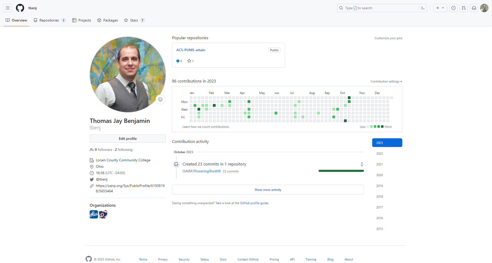
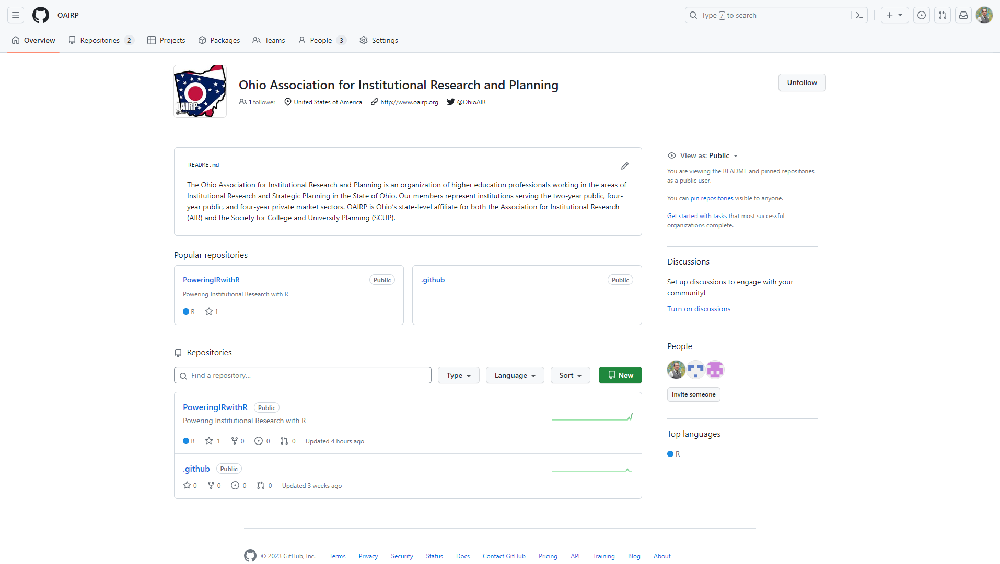
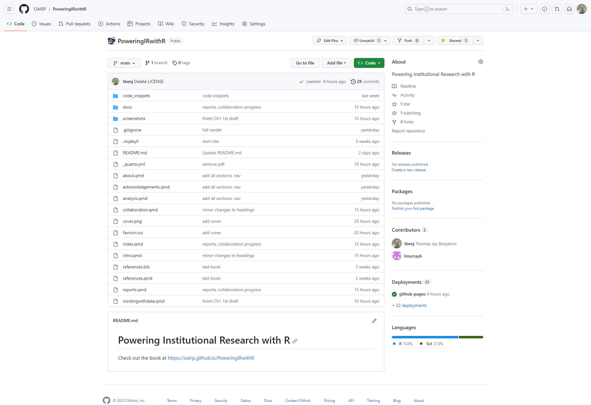

5 Collaborating on code
Through Chapter 4 you’ve developed a report using R code that incorporates your data analysis. Though some IR projects are solo efforts, in many cases we want to collaborate with other institutional researchers, either now or in the future.1
In this section we’ll discuss how you can set up your project in a way that makes it easy to collaborate, borrowing practices from software development.
We’ll begin by creating an account at GitHub, an online package repository and collaboration tool using Git, a version control system that we’ll install.
5.1 Setting up GitHub
GitHub is a developer platform to host code and provide for collaboration. Now owned by Microsoft, it has added numerous complex features that can help in software development. As professionals focused on data analytics, we’ll just focus on the core code-hosting and collaboration tools for now.
Head to https://github.com/ and create a new account if you do not already have one.
There’s no need to have multiple accounts like one for work and one for personal. In fact, GitHub recommends having just one account. You can add multiple email addresses to your GitHub account, and your GitHub account can be a member of an organization that hosts repositories.
Once you have your GitHub account, you’ll be able to connect it with Git when we install it in Section 5.3.
5.2 An overview of GitHub
When you log into GitHub, you’ll be presented with a dashboard that may be fairly empty. You can reach your profile by clicking on the icon in the top right. It will look similar to:

A GitHub organization is a special type of GitHub account that can host code projects. Personal GitHub accounts can be added as members of the organization. Organizations can have multiple teams within the organization - you should check with others at your institution before creating one.
We’ve created a GitHub Organization for the Ohio Association for Institutional Research and Planning: https://github.com/oairp. If you click on it, you should see the following:

.github) that holds the summary README.md file displayed and one for this guide. You can also see that the authors of this guide are members of the organization.At this point, you’ve noticed that both the personal account profile page and the organizational profile page have top navigation bars that begin with Overview and Repositories. Repositories, or repos for short, are essentially code projects.2 Go ahead and click into the PoweringIRwithR repo:

Here you can see the source code for this guide, and an overview of the most recent changes to the various files. You will also notice that the repo has one branch (main), two collaborators (the authors), and a deployment to GitHub Pages. The buttons towards the top allow you to follow the project in different ways and even make a copy of the project for yourself.
5.3 Setting up Git
Git is a free, open-source version control system. When enabled, it keeps track of changes you make to your code, and is small and fast so you won’t notice it’s enabled. Install Git at https://git-scm.com/ - click on Downloads then your operating system. Accept the defaults, particularly to use the main branch as the default branch and to enable Git Credential Manager, which will enable you to connect with GitHub.
There is one thing you’ll need to do to make Git operational after you install - you’ll have to let it know who you are. This is so it can track who is making the file changes to your projects that you are working on. Run the following code in your OS terminal, but be sure to replace you@example.com and Your Name with your own information.
Terminal
git config --global user.email "you@example.com"
git config --global user.name "Your Name"Though Git can be used locally, a lot of the power of using Git is in connecting with an online repository and collaborative version control system like GitHub.
You’ll want to associate the email address you use in Git with your GitHub account, so that your edits can be properly associated with your account.
5.4 Syncing a project with GitHub
needs content
Setting up a project started on GitHub to sync locally
needs content
Setting up a project started locally to sync with GitHub
5.5 The basics of Git operations
needs content
There are additional Git concepts that may be helpful if you are working in a larger team:
- merge conflict
- an issue that occurs when multiple changes are being made to the same line(s) of code. Push/sync will return an error until resolved, typically by making changes to the file that is blocked by the merge conflict.
- branch
- an additional copy of the code that can be used when a developer or team of developers are working on a set of features in development. This ensures that the main copy is not affected during the development.
- merge branch
- the process of merging new features created by a separate branch back to the main branch.
The details of these are beyond the scope of this guide, but it’s helpful to know about them so you know when you may want to learn more. One resource is the Git & GitHub RStudio cheat sheet.
Exercises
Exercise 1
Log into GitHub and navigate to the PoweringIRwithR repository. Star it!
Exercise 2
Search "institutional research" on GitHub. Find something intersting!
Extra: About GitHub Pages
GitHub Pages is a website hosting service for GitHub accounts and public projects.
You can use Quarto to generate the files needed for a website or ebook, publish them to GitHub, set up GitHub pages, and then view your project site live on the web!
Account sites are in the format username.github.io while projects are hosted as username.github.io/reponame.
This guide was created as an ebook in Quarto and is hosted by GitHub & GitHub Pages. Since this guide is the PoweringIRwithR repo hosted by the OAIRP organization, the URL is https://oairp.github.io/PoweringIRwithR.